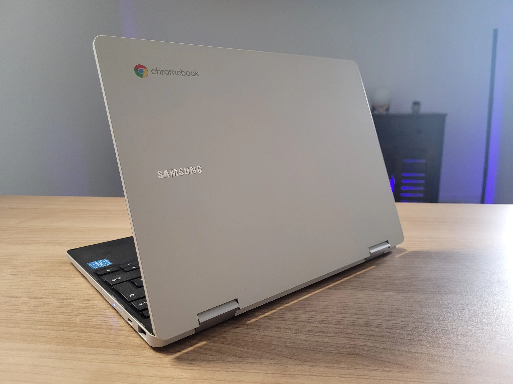

In a world dominated by laptops running various operating systems like Windows and macOS, Chromebooks have emerged as a unique and streamlined alternative. These laptops, designed by Google, operate on a distinct operating system known as Chrome OS. In this post, we'll delve into the intricacies of Chromebooks, uncovering what sets them apart in terms of simplicity, speed, and their reliance on cloud-based computing.
Table of Content
______________________________________________________________________________
______________________________________________________________________________
What is a Chromebook?
Ryan Jones, CC BY-NC-ND 4.0 DEED, Via Trusted Reviews
A Chromebook is a type of laptop computer designed and manufactured by various companies, with the operating system exclusively powered by Google's Chrome OS. Chromebooks are known for their lightweight, web-centric approach, relying heavily on cloud-based applications and storage. They are characterized by fast boot times, automatic updates, and a user-friendly interface, making them particularly popular in educational settings and among users whose computing needs primarily involve web browsing and online applications.
What Sets Chromebooks Apart?
1. Chrome OS: A Lightweight Operating System
Chrome OS, the operating system that powers Chromebooks, is a Linux-based platform developed by Google. What distinguishes it from other operating systems is its lightweight nature, emphasizing simplicity and speed. Chrome OS is designed to be highly responsive, ensuring quick boot times and smooth performance.
2. Simplicity in Design and User Interface
Chromebooks are renowned for their user-friendly interface. The design philosophy revolves around simplicity, making these laptops accessible even to users with limited technical expertise. The interface is clean and straightforward, resembling the familiar Google Chrome web browser.
3. Fast Boot Times and Instant Updates
One of the standout features of Chromebooks is their impressive boot times. Users can power on their device and be ready to work or browse the web within seconds. Additionally, Chrome OS is designed to update seamlessly in the background, ensuring users always have the latest security patches and features without any interruptions.
The Chromebook Hardware Landscape
4. Diverse Range of Devices
Chromebooks come in various shapes and sizes, catering to different user preferences and needs. From compact and lightweight models ideal for students to larger, more powerful devices suitable for professional use, the Chromebook market offers a diverse range of options.
5. Affordability Without Compromise
Chromebooks are often more budget-friendly compared to laptops running other operating systems. Despite their lower price point, they don't compromise on performance, making them an attractive option for users seeking an efficient and cost-effective computing solution.
Embracing Cloud-Based Computing

6. Storing Data in the Cloud
Chromebooks rely heavily on cloud-based computing, which means a significant portion of data storage and application processing occurs online rather than on the device itself. This approach enables users to access their files and applications from any device with an internet connection, promoting flexibility and collaboration.
7. Google Workspace Integration
Chromebooks seamlessly integrate with Google Workspace, a suite of productivity tools including Google Docs, Sheets, and Slides. This integration enhances collaboration among users, allowing real-time editing and sharing of documents directly from the cloud.
Who Benefits Most from Chromebooks?
8. Education and Student-Friendly Features
Chromebooks have gained popularity in educational settings due to their affordability, simplicity, and ease of management. With features like automatic updates and a secure, controlled environment, Chromebooks provide an ideal platform for students and educators.
9. Casual Users and Web-Centric Tasks
For users whose computing needs primarily revolve around web browsing, email, and online applications, Chromebooks are an excellent choice. Their streamlined design and cloud-centric approach make them well-suited for individuals who rely on internet-based services.
What is the Difference Between a Laptop and a Chromebook?
Operating System:
Laptops: Run a variety of operating systems, including Windows, macOS, or Linux.
Chromebooks: Exclusively run Chrome OS.
Storage:
Laptops: Typically have local storage for files and applications.
Chromebooks: Rely on cloud-based storage, minimizing local storage needs.
Applications:
Laptops: Can run a wide range of applications, including desktop software.
Chromebooks: Primarily run web-based applications, with limited support for traditional desktop software.
Examples of Popular Chromebook Brands:
.jpg)
Acer: Acer is known for producing a diverse range of Chromebooks that cater to various user needs. From budget-friendly models suitable for students to more powerful devices for professionals, Acer's Chromebooks often feature sleek designs and reliable performance.
ASUS: ASUS Chromebooks are recognized for their innovation and versatility. ASUS offers a range of options, including convertible models with touchscreen capabilities. The brand emphasizes quality build and performance, making their Chromebooks suitable for different user preferences.
HP: HP Chromebooks combine style with functionality. Known for their elegant designs, HP's Chromebook lineup includes both affordable options for everyday use and higher-end models with features like high-resolution displays and powerful processors.
Lenovo: Lenovo's Chromebooks are celebrated for their reliability and durability. The brand offers a variety of form factors, from traditional clamshells to 2-in-1 convertibles, providing users with flexibility. Lenovo Chromebooks often feature robust construction, making them suitable for both students and
SamsungSamsung Chromebooks are known for their sleek designs and high-quality displays. Samsung often incorporates its expertise in display technology into their Chromebooks, delivering vibrant visuals. The brand offers a mix of budget-friendly and premium models to cater to different audiences.
Conclusion
In summary, Chromebooks represent a unique approach to computing, emphasizing simplicity, speed, and cloud-based functionality. With an ever-expanding range of devices and an operating system tailored for efficiency, Chromebooks continue to gain traction in various user demographics, from students to professionals seeking a reliable and affordable computing solution. As the digital landscape evolves, Chromebooks are likely to remain a compelling option for those who prioritize a streamlined and web-centric computing experience.